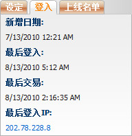

账号设定
定义:
这是总代理查看或修改他/她下线的设定。

设定
用词注解:
-
允许优胜冠军: 显示此账号是否被允许优胜冠军投注。
-
启用南非彩池: 显示账号是否被启用赛马南非彩池。
-
启用英国彩池: 显示账号是否被启用赛马英国彩池。
-
启用金融: 显示账号是否被允许金融投注。
-
启用娱乐城: 显示账号是否被启用娱乐城游戏。
功能支持:
- 修改资料: 允许用户修改名, 姓, 电话, 手机, 电邮, 传真。
- 投注设定: 允许用户修改投注设定。请查阅投注设定指引以了解此页面详情。
- 佣金 允许用户修改下线佣金。请查阅佣金设定指引以了解详情。
- 修改密码: 此处可为下线更换密码。密码必须至少6个字符, 包括2个字母和2个数字。
- 修改体育博彩: 允许用户修改下线的体育博彩设定, 请查阅编辑体育博彩设定指引以了解详情。
- 修改赛马: 允许用户修改下线的赛马设定, 请查阅编辑赛马设定指引以了解详情。
- 修改金融: 允许用户修改下线的金融设定, 请查阅编辑金融设定指引以了解详情。
- 修改娱乐城: 允许用户修改下线的娱乐城设定, 请查阅编辑娱乐城设定指引以了解详情。
- 体育博彩最低占成: 允许用户修改体育博彩最低占成, 请查阅体育博彩最低占成设定指引以了解详情。
- 赛马最低占成: 允许用户修改赛马最低占成, 请查阅赛马最低占成设定指引以了解详情。
- 金融最低占成: 允许用户修改金融最低占成, 请查阅最低金融占成设定指引以了解详情。
- 转账: 更换转账设定。请查阅转账设定指引以了解详情。
- 清除所有信用额度: 允许用户清除下线所有信用额度。
注:
总代理可以查看登入日志包括: 新增日期, 最后交易, 登入IP及在线列表, 只需点击登入, 在线列表标签。

登入信息